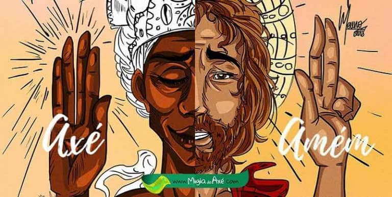
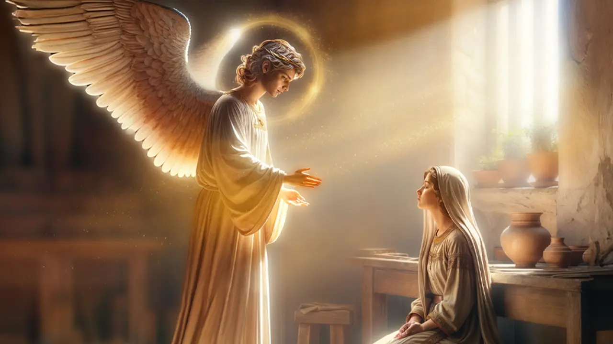

É uma religião, ou seja, o caminho para chegar a Deus(Olorum) e encontrar á luz. Luz que mostrará o porque aqui estamos, como devemos seguir o caminho certo para chegarmos a Fé, Caridade e Humildade.
Fé é crer com razão, ou melhor, sempre sabendo o porque e não aceitando mistérios ou mentiras. Não tenha vergonha ou medo quando houver dúvida.
Falar em Umbanda é seguir estas palavras: "Umbanda sem caridade, não é Umbanda".
Ser Umbandista é acima de tudo, ver a vida e viver como um filho de Deus(Olorum). Encontrar na caridade exemplo e forças para viver. Não nos acharmos melhores ou diferentes dos outros irmãos.
Saravá a nossa Umbanda!
Sincretismo pode ser entendido como a fusão de uma ou mais crenças mantendo os traços de suas origens, fenômeno que acontece na Umbanda, no Catimbó, na Jurema, Candomblé de Caboclo, entre outros. Entretanto, essa prática nasceu no período da escravidão no Brasil, quando os negros escravizados cultuavam os Orixás e eram duramente repreendidos por seus “senhores”.
Para se ter uma ideia simples da repressão que sofriam, basta dizer que a prática do Candomblé e da Capoeira eram crimes puníveis com chicoteamento, prisão, enforcamento e, em casos mais severos, até a morte na fogueira. E o mesmo acontecia com as religiões de origem africana. Noutras palavras, não se podia cultuar os Orixás.
À época, também não se admitia que os negros entrassem nas igrejas católicas junto com os brancos, o que fez com que os negros escravizados fossem forçados a criar igrejas próprias, mais simples, onde rezariam e salvariam suas almas “pecaminosas”.
No entanto, logo os negros escravizados perceberam que os brancos “faziam gosto” que eles rezassem para Nossa Senhora da Conceição (sincretizada com Iemanjá). Da mesma forma, batiam nos moleques que brincassem de ser guerreiro como Ogum, mas se sentiam aliviados em vê-los interpretar São Jorge a matar o dragão.
E foi assim que negro se tornou branco, sem deixar de ser negro!
Os Orixás, Nkisis, Voduns, deuses dos Yorubás, Nagôs, Jêjes, etc., encontraram uma forma de sobreviver ao preconceito, à chibata, à dor, ao sofrimento de forma inteligente para a época, às custas de um sincretismo forçado e, até ali, talvez a única maneira de manter sua fé, ainda que de maneira torta.

Então Santo e Orixá são as mesmas coisas?
Jesus é Jesus e Oxalá é Oxalá, até onde sabemos. Os dois espíritos que serviram ao Órum (Terra) com missões diferentes, vindo Jesus para instruir os homens e Oxalá o criador de todas as coisas.
Então, não tem problema ser umbandista e admirar, crer, respeitar, amar Jesus amando Oxalá. Os dois serviram aos propósitos de Olorum. E é isso mesmo: temos que amar, apenas! Sem preconceito! Se sentirmos vontade de amar, e essa for nobre e fiel às leis divinas.
Salve todos os Orixás, todos os santos, todos os espíritos de luz que nos guiam e iluminam! Axé! Salve o sincretismo!

Na Umbanda, o anjo da guarda é visto como um ser celestial de proteção que acompanha cada pessoa desde o nascimento. Ele atua como um intermeriário entre o plano espiritual e o plano físico, garantindo que a missão de vida e os caminhos sejam iluminados. Os anjos da guarda são considerado tão importants quanto os Orixáse entidades espirituais, especialmente para os médiuns, pois oferecem proteção durante os momentos de incorporação e desincorporação.
A importância do Anjo da guarda é fundamental para a proteção espiritual e emocional. Ele ajuda a evitar que energias negativas ou seres inferiores intrfiram na vida do protegido. Durante as incorporações, o anjo da guarda permanece ao lado do médium, garantindo que a energia do Orixá ou entidade que esta se manifestando seja mantida em harmonia.